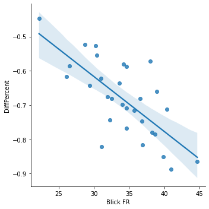

Tops and flops of the month
In a nutshell: what was the best and worst day of the month in the competition for visits between Blick FR and Watson FR?
septembre 2021 daily visitors
In a nutshell: what was the best and worst day of the month in the competition for visits between Blick FR and Watson FR?
Woaw!
On 28.09.2021, Blick FR was closest to Watson FR, with a -88% difference in visits only (that's 20% smaller than average).
This day, we had 41,000 visits (vs 15,800 for Watson FR).
This was our #2 day of the Month in terms of visits.
These were the most trending Twitter topics in Switzerland on that day:
Zertifikat, #WTOPublicForum, #btw21, #HRC48, #NewWorldMMO
Well, not so good…
On 12.09.2021, Blick FR was really distanciated by Watson FR, with a -44% difference in visits (that's 23% more than average). This is our worst day in the battle.
This day, we had 22,200 visits (vs 14,100 for Watson FR).
This was our #30 day of the Month in terms of visits.
These were the most trending Twitter topics on that day:
#September11, Namjoon, Ronaldo, #NeverForget, #ybfcz
For each day, the top news of the days for Switzerland, according to a service called Gnews.io.
Unfortunately, we are not so sure the data is reliable, but the very reliable Google doesn't provide a history of top news.
Linear correlation between # of visits and gap between Blick FR and Watson FR?

Pearson's R: (-0.717214256385294, 8.203470574376624e-06)